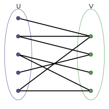

Guide to graph theory: Basics
REVISIONS:
- 2021-09-11 12:00:00: First submissions
In this series of blog posts i will cover some fundamental knowledge about graphs and i’ll share some snippets of code in order to describe the graphs we’re using.
Graph theory is the study of a mathematical structure used to model relations between objects: in fact, a graph connects a series of object (called nodes) using a link (called edges).
A graph can be also be simple, so every node or edge doesn’t have any attribute, or complex, with attributes that describe nodes (such as an attribute that reflects the name of the point) or attribute that characterize the connection between vertices (such as the weight of the relation).
Right away the definition of elements we find in a graph:
-
Vertices/Nodes:
Nodes represent an objects and hold attributes that describe it: for example, in a social graph, nodes represent people and they might have attribute related to sex, ages, social influence and so on. Nodes are one of the main subjects of graph, because they represent information about the population described by the graph.
-
Edges/Links:
Edges represent the connection and the relationship between objects and the principles that connects them togheter. Objects with a connections are related, and this relationship might represent similiarity in some attributes. Edges might also have attributes, that shows the weight of the relationship, such as intensity, weight or similarity.
-
Directions:
The relationship between two nodes A and B might be A towards B, B towards A or both combined, or none. A directed graph shows a relation from one node to another one, which might not be reciprocate. An undirected graph is a connection between two vertices without information about the direction, so the relationship can be considered in both ways between them.
-
Cycles:
A graph is called cyclical when it has a set of nodes that are connected in a closed loop, otherwise a graph is called acyclical when it hasn’t have the closed/loop property.

Cyclical graph and acyclical graph displayed. The cycle is highlighted in black. source: Researchgate
The structure of a graph may vary based on its topology, or in simple words its combination of nodes and edges: the relationship between nodes yeld to several types of graphs, distinguished on the basis of edges, their directions and their attributes.
Right away some well known graph we find in literature:
-
Simple graph:
A graph is called simple when each edge connects two different vertices and no vertex has loops or more than one edge connecting them. The graph is also unweighted and undirected, with no multiple edges.
Simple graph. Note how each edge connects only two nodes. source: Researchgate
- Multigraph: A graph is called multigraph when multiple edges may connect the same pair of vertices. In this kind of graph, multiple edges lies between the same pair of vertices, so the multiplicity of the edge reflects the number of edges between two vertices.
Simple graph. Note how each edge connects only two nodes. source: Github
- Connected graph: A graph is called connected when every pair of vertices is connected, so there’s a path between every pair of nodes. On the other side, a disconnected graph is a structure where there’s unreachable nodes.
On the left graph, a connected graph, on the right, a disconnected ones. The difference lies in the edges: in the first one, every node is reachable by any node, where in the second one don’t. source: steveclarkapps
-
Complete (or universal) graph:
A graph is called complete when each pair of vertices is connected by an edge.

Complete graph, where each vertices is connected by an edge to every other node. source: Wikimedia
-
Biconnected graph:
A biconnected graph is a connected and non-separable graph: it means that, if any node is removed, the graph will continue to be connected, so it has a high value of redundancy.
Biconnected graph, where the removal of a node won’t disconnect the structure. source: Wikimedia
-
Bipartite graph:
A bipartite graph is a graph whose nodes can be divided in two sets such that every edge connects a vertex in one group and one in another. 
Bipartite graph, where the removal of a node won’t disconnect the structure. source: Wikimedia
** Conclusions ** In this post we had investigate the main component of a graphs, and we inspect the most common and widespread types of graph in literature. In the next blogpost we’ll focus on graph’s metrics and other attributes.
DISCLAIMER: in the near future i’ll update this post with ad hoc visualization and i’ll link the script to generate them.